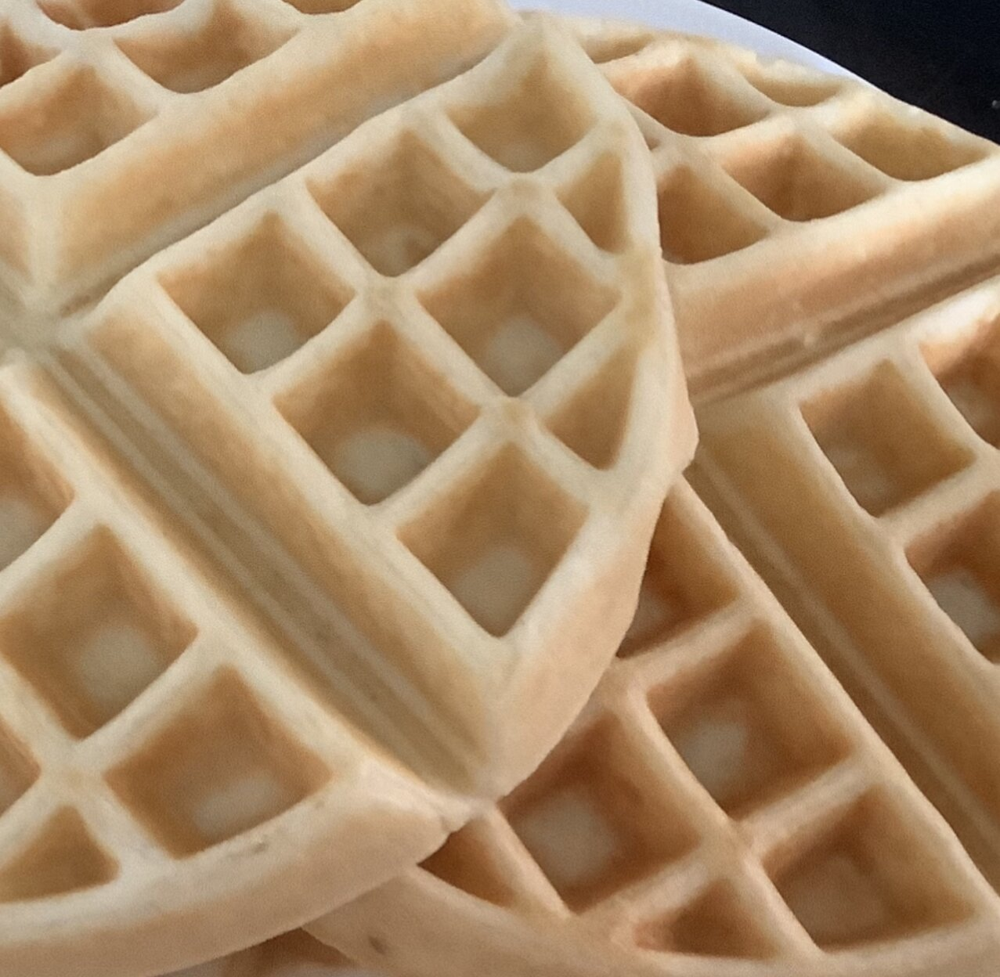

Recipe for Waffles

Nutrition
Per Serving: 382 calories; protein 8.7g; carbohydrates 38g; fat 21.6g; cholesterol 67.7mg; sodium 390mg.
Ingredients
- 2 eggs
- 2 cups all-purpose flour
- 1 ¾ cups milk
- ½ cup vegetable oil
- 1 tablespoon white sugar
- 4 teaspoons baking powder
- ¼ teaspoon salt
- ½ teaspoon vanilla extract
Directions
- Preheat waffle iron. Beat eggs in large bowl with hand beater until fluffy. Beat in flour, milk, vegetable oil, sugar, baking powder, salt and vanilla, just until smooth.
- Spray preheated waffle iron with non-stick cooking spray. Pour mix onto hot waffle iron. Cook until golden brown. Serve hot.